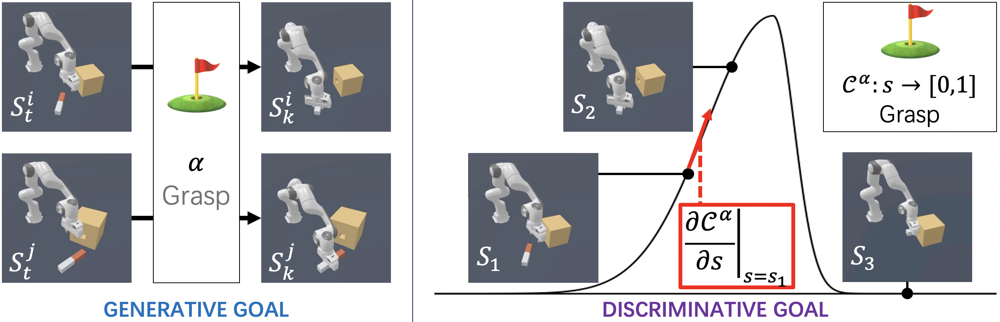

|
About
From: China 🇨🇳
🎓 undergraduate @ Peking University (9/2020-)
|
||
|
Ruizhe Liu 📧 lrz360@stu.pku.edu.cn 📞 (+86) 159 2736 8711 |
||
|
Projects |
||
|
InfoCon: Concept Discovery with Generative and Discriminative Informativeness ✍️ Ruizhe Liu, Qian Luo, Yanchao Yang 📰 Accepted by ICLR 2024 🔗 [intro.][codes][paper] |
 | |
|
Concentration in CTM: Definition, Metric and Effect ✍️ Chuanruo Ning, Ruizhe Liu 🧑🏫 Cognitive/Computer Science of the Conscious Turing Machine (CTM) [about CTM] 🔗 [paper] |
||